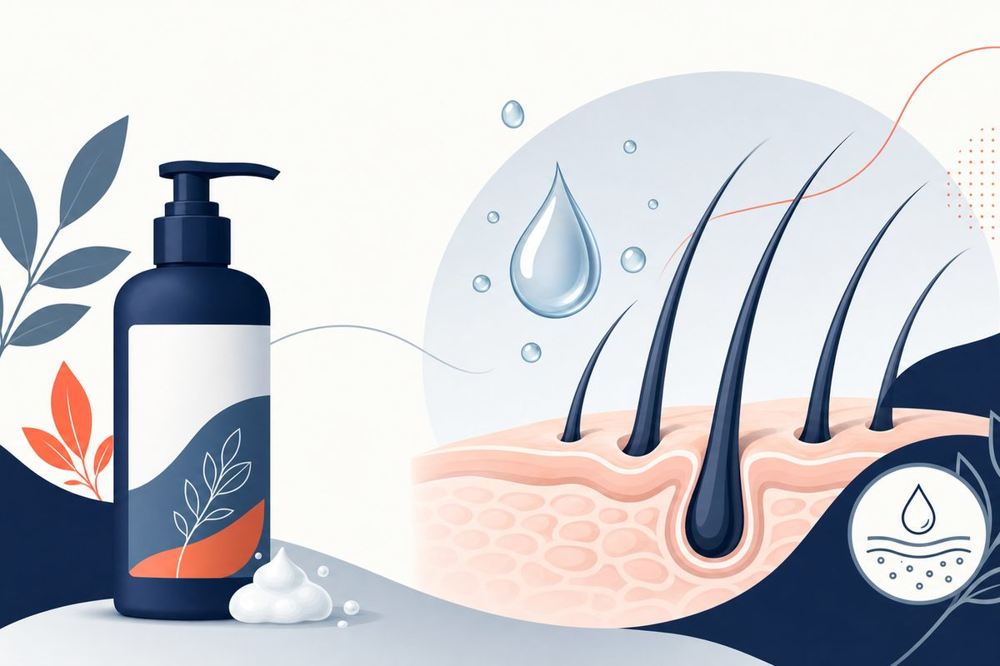

Key Takeaways
- Read the active ingredient and strength, not just the brand name.[16][17][19]
- Nizoral 1% and prescription ketoconazole 2% do not share one dosing plan.[10][17][20]
- Ciclopirox 1% specifies 3 minutes on the scalp; not all shampoo labels specify a timed wait.[17][18][19]
- Older head-to-head trials tested specific formulations and do not identify a universal best bottle.[11][21]
- Curly or coily hair needs scalp-directed application and attention to dryness.[16]
- Stop for a concerning reaction; persistent symptoms or patchy hair loss need assessment.[1][3][17][18][20]

Which dandruff shampoo should I buy first?
For mild adult scalp flaking, choose a labeled anti-dandruff ingredient you can use consistently and tolerate. There is no universal winner: bottle instructions, hair texture and whether this is truly dandruff matter more than a brand ranking. Persistent inflammation or patchy hair loss needs a diagnosis check.[1][3][16]
Most people assume dandruff is a hygiene problem. In clinical experience, that's the first misconception I have to address. Dandruff and seborrheic dermatitis are not caused by dirty hair. They are thought to result from an inflammatory response to a yeast that lives on the skin.[2] You could wash your hair twice a day and still have seborrheic dermatitis; conversely, someone with excellent hygiene and a well-regulated immune response may never develop it at all.
Seborrheic dermatitis is a common chronic inflammatory skin disorder.[3] Some authors consider dandruff a mild, non-inflammatory form of it.[5] It shows up as itchy, flaking skin and greasy yellowish scales, most commonly on the scalp, but also on the face, eyebrows, ears, and chest. For many patients, it's a chronic, relapsing condition that requires thoughtful long-term management.
This guide covers what we know about why seborrheic dermatitis happens, the full spectrum of treatment options from drugstore shampoos to prescription medications, and how to think about keeping it controlled over time. I'll also address when this condition warrants a closer look at your overall health.
What Is Seborrheic Dermatitis?
Seborrheic dermatitis (SD) is a chronic inflammatory skin condition affecting areas where sebaceous (oil) glands are most active: the scalp, face, and upper trunk. It exists on a spectrum. At the mild end is dandruff, with scalp flaking and little redness. At the more severe end is florid seborrheic dermatitis with erythema (redness), thick greasy plaques, and itch that affects quality of life.
The condition follows a bimodal pattern, with a first peak in infancy (as cradle cap) and a second in adulthood, particularly among young adults. It occurs more often in men than in women; androgens stimulate sebaceous gland activity, which is thought to contribute.[5]
"Seborrheic" refers to the sebaceous glands that produce skin oil (sebum). "Dermatitis" means skin inflammation. The name tells you exactly where the problem sits: in the inflamed, oily zones of the skin. The fact that these areas are rich in sebum is not coincidental. It is tied to the role that the Malassezia yeast plays in this condition, since this yeast breaks down skin lipids.
The Role of Malassezia Yeast
Malassezia is a genus of lipophilic (fat-loving) yeasts that are part of the normal skin flora. The genus includes more than 14 species, and M. globosa and M. restricta are the species most frequently associated with seborrheic dermatitis.[5]
Here's what actually happens at the skin level. Malassezia produces enzymes such as lipases and phosphatases that break down sebaceous lipids (fats) on the skin surface. This releases free fatty acids. One of them, oleic acid, penetrates the outer skin layer (stratum corneum), promotes inflammation, and induces flaking.[5]
The inflammatory response runs deeper than the yeast itself. Skin cells detect Malassezia through a pattern recognition receptor called Toll-like receptor 2 (TLR2), which triggers the release of pro-inflammatory cytokines including IL-8, IL-6, and TNF-α. Studies of affected skin point to activation of Th1, Th17, and Th22 immune pathways, a broader immune activation than you would expect from a simple yeast infection.[5]
Notably, the link between how much yeast is on the skin and how severe the disease is remains controversial.[5] That fits the view that seborrheic dermatitis is not simply caused by too much Malassezia; it reflects an abnormal response to an organism that normally lives on the skin, and individual susceptibility matters.
What is the best dandruff shampoo?
For mild dandruff and early seborrheic dermatitis, the drugstore aisle is a reasonable place to start: an American Family Physician review advises beginning scalp treatment with an over-the-counter shampoo.[2] Several active ingredients address the condition through different mechanisms, and the AAD suggests alternating ingredients if one shampoo does not work.[16]
| Active Ingredient | How It Works | Best For | Common Brands |
|---|---|---|---|
| Zinc pyrithione | Antifungal + antibacterial; disrupts membrane function of Malassezia | Mild-to-moderate dandruff | Read the active ingredient on your own bottle[16] |
| Selenium sulfide 1% | Antifungal; reduces Malassezia colonization and slows skin cell turnover | Moderate dandruff; oily scalp | Selsun Blue selenium sulfide 1%, cited formulations[19] |
| Coal tar | Antiproliferative; slows skin cell shedding; mild antifungal | Scalp SD with thick scaling; also used for scalp psoriasis | Read the active ingredient on your own bottle[16] |
| Salicylic acid | Keratolytic; loosens and removes scale | Thick, adherent scale; often combined with other agents | Read the active ingredient on your own bottle[16] |
| Ketoconazole 1% (OTC) | Antifungal; directly targets Malassezia cell membrane | Persistent dandruff not responding to zinc pyrithione; step up from basic OTC options | Nizoral 1%, cited formulation[17] |
Which seborrheic dermatitis shampoo should I choose?
Start with the active ingredient and the directions on your own bottle, not its brand name alone. Ketoconazole, selenium sulfide and zinc pyrithione are reasonable options for dandruff, while salicylic acid helps loosen scale. There is no single bottle that works best for everyone. If one ingredient does not help despite correct use, a clinician may suggest another or reassess the diagnosis.[1][2][3][16]
Zinc pyrithione shampoo
Zinc pyrithione is an anti-dandruff ingredient, not the same medicine as ketoconazole or selenium sulfide. A 2002 open-label trial compared zinc pyrithione 1% with ketoconazole 2% in severe dandruff and scalp seborrheic dermatitis. Both improved symptoms. That study does not establish that every current product or mild case will respond the same way.[11][16]
Selenium sulfide shampoo
The cited Selsun Blue label contains selenium sulfide 1%. It says to shake well, wet the hair, massage onto the scalp and rinse; repeat if desired, and use at least twice weekly or as directed by a doctor. It does not specify a timed leave-on interval. Other bottles sold under similar brand names can contain zinc pyrithione or salicylic acid, so check the Drug Facts panel.[19][16]
Ketoconazole shampoo: is 1% the same as 2%?
Nizoral Anti-Dandruff 1%: the OTC product
The cited US Nizoral 1% label says to wet hair thoroughly, lather, rinse thoroughly and repeat. Its directions are every 3 to 4 days for up to 8 weeks or as directed by a doctor, then only as needed. It says to stop and ask a doctor if a rash appears, symptoms worsen or there is no improvement in 2 to 4 weeks. Do not use it on a broken or inflamed scalp. Pregnancy or breastfeeding calls for clinician advice first.[17]
Prescription ketoconazole 2%: evidence is not the same as the US label
Clinical trials and reviews support ketoconazole 2% shampoo for scalp seborrheic dermatitis, commonly twice weekly for 2 to 4 weeks. However, the reviewed US Padagis 2% shampoo label lists tinea versicolor as its indication, not scalp seborrheic dermatitis. Scalp use under that label is off-label and requires individualized instructions. Do not copy its single-application tinea-versicolor regimen into a dandruff plan.[3][10][20]
Ketoconazole vs selenium sulfide: what the comparison actually tested
A 1993 randomized trial enrolled 246 patients and tested ketoconazole 2%, selenium sulfide 2.5% and placebo. Both medicines improved dandruff more than placebo. Ketoconazole was statistically better than selenium sulfide at day 8 only, and the nine reported treatment-phase adverse experiences occurred in the selenium group. This is older, formulation-specific evidence, not proof that OTC ketoconazole 1% always beats OTC selenium sulfide 1%.[21]
How to get rid of dandruff: 4 product-specific direction checks
How long should dandruff shampoo stay on the scalp?
Follow the actual label and your clinician's plan. The AAD notes that some products need several minutes, but directions vary. A blanket five-minute rule is not appropriate for every bottle: the cited ciclopirox 1% label specifies 3 minutes, whereas the cited Nizoral 1% and Selsun Blue 1% labels do not give a timed wait.[16][17][18][19]
| Exact product | Frequency or course | Contact-time distinction | When to reassess |
|---|---|---|---|
| Nizoral ketoconazole 1% OTC | Every 3 to 4 days, up to 8 weeks; then as needed | Lather, rinse and repeat. No timed wait in cited Drug Facts. | Worse, rash, or no improvement in 2 to 4 weeks.[17] |
| Selsun Blue selenium sulfide 1% OTC | At least twice weekly, or clinician-directed | Shake; massage onto wet scalp and rinse. No timed wait in cited label. | Worse or not improving with directed regular use.[19] |
| Ciclopirox 1% prescription | Twice weekly for 4 weeks; at least 3 days apart | Leave on for 3 minutes, then rinse. | Review diagnosis if no improvement after 4 weeks.[18] |
| Ketoconazole 2% prescription, scalp SD use | Studied scalp schedules differ from the reviewed US tinea-versicolor label. | Use the prescriber's scalp-specific instructions. | Ask about irritation, allergy or failure to improve.[3][10][20] |
Curly or coily hair needs scalp-directed care
Apply dandruff shampoo to the scalp rather than unnecessarily coating the full hair length. The AAD advises that curly or coily hair may tolerate anti-dandruff washing about once weekly; normal shampoo and conditioner can follow when needed for hair care. This general advice does not override a prescription course. If the prescribed schedule dries your hair or irritates your scalp, ask the prescriber to adjust the plan rather than silently changing doses.[1][16][18]
Use one clear plan rather than layering several medicated shampoos at every wash. Avoid the eyes and stop for a concerning reaction. Persistent symptoms deserve a diagnosis check, especially when the scalp is painful, crusted, broken, markedly inflamed or losing hair in patches.[1][3][16][17][18][20]
Which seborrheic dermatitis shampoo needs a prescription?
When OTC shampoos don't control the condition after several weeks of consistent use, it's time to step up. Several prescription options are well studied and effective for both acute treatment and maintenance.
Ketoconazole 2% Shampoo and Cream
Prescription-strength ketoconazole 2% is one of the most studied antifungals for seborrheic dermatitis. In a randomized, open-label trial in 331 people with severe dandruff or seborrheic dermatitis, ketoconazole 2% shampoo achieved a 73% improvement in the total dandruff severity score at week 4, compared with 67% for zinc pyrithione 1% shampoo, and recurrence was significantly lower after ketoconazole.[11]
The usual acute regimen for ketoconazole 2% shampoo is twice weekly for 4 weeks.[3] In a multicenter trial, 575 patients with moderate to severe scalp seborrheic dermatitis and dandruff used it twice weekly for 2 to 4 weeks, with an excellent response in 88%. Among responders who then used it once weekly for 6 months, 19% relapsed, compared with 47% on placebo shampoo.[10] Ketoconazole 2% cream or gel is used for facial and body seborrheic dermatitis; in one trial the cream was applied once daily for 4 weeks.[3]
Ketoconazole shampoo may alter hair texture or leave the hair and scalp dry or oily.[4] If you have curly or tightly coiled hair, a dermatologist may recommend using dandruff shampoo once a week rather than more often.[1] Your physician can help tailor the schedule to your hair type.
Ciclopirox 1% Shampoo
Ciclopirox is a broad-spectrum antifungal with anti-inflammatory properties. In a randomized, double-blind trial of 350 patients comparing ciclopirox 1.5% shampoo, ketoconazole 2% shampoo, and placebo, both active shampoos reduced the affected scalp area significantly more than placebo, and patients rated their overall improvement as better with ciclopirox than with ketoconazole.[12] The 1.5% strength studied there is sold outside the United States; in the U.S., ciclopirox is approved for adult scalp seborrheic dermatitis as a prescription 1% shampoo and 0.77% gel.[3]
Ciclopirox shampoo is available by prescription only, and twice-weekly use for 4 weeks appears to be an optimal treatment schedule. Ciclopirox cream is also used for facial and body seborrheic dermatitis.[3]
Topical Corticosteroids
Corticosteroids address the inflammatory component of seborrheic dermatitis and can bring quick control of redness, scaling, and itch.[3] That makes them useful for getting a bad flare under control. The recommendation for patients: corticosteroids are a useful short-term bridge, not a long-term solution.[2]
Low- or mid-potency topical corticosteroids, such as hydrocortisone or desonide, have been successful in reducing symptoms on the scalp, face, and body.[2][3] Long-term use has been associated with thinning of the skin and telangiectasia (visible small blood vessels),[2] and reviews also list striae (stretch marks) among the risks.[3] Corticosteroids are often combined with an antifungal when fast control of inflammation is needed.[3]
Roflumilast Foam (Zoryve)
Roflumilast foam 0.3% is a newer option: a topical phosphodiesterase-4 (PDE4) inhibitor.[13] Blocking PDE4 suppresses several pro-inflammatory cytokines.[5] The FDA approved it for seborrheic dermatitis in adults and children 9 years of age and older, applied as a thin layer once daily to affected skin or scalp.[14] In the phase 3 STRATUM trial, 79.5% of patients using roflumilast and 58.0% using vehicle foam reached clear or almost clear skin with at least a 2-point improvement at 8 weeks.[13]
Calcineurin Inhibitors
Tacrolimus (Protopic) and pimecrolimus (Elidel) are topical calcineurin inhibitors that reduce inflammation without causing skin atrophy, which makes them a valuable non-steroidal alternative for facial seborrheic dermatitis.[5] They are FDA-approved for atopic dermatitis, and for seborrheic dermatitis a review gives a schedule of twice daily for 4 to 8 weeks in the acute phase, or once weekly for 12 weeks as maintenance.[3] Both received an FDA boxed warning about a possible cancer risk; an American Family Physician review notes the evidence for that risk is insufficient but advises avoiding continuous long-term use.[2]
Oral Antifungals
For severe or treatment-resistant seborrheic dermatitis, a dermatologist may prescribe an oral antifungal such as itraconazole or terbinafine.[1] Both drugs are lipophilic and persist in the skin. The goal is prompt symptom control followed by topical maintenance therapy. Because oral antifungals can affect liver function or blood tests and interact with other medicines, they are recommended only in selected cases.[3]
Scalp vs. Facial Seborrheic Dermatitis
Seborrheic dermatitis behaves differently depending on where it appears, and treatment approaches differ accordingly. The scalp and face are the two most commonly involved areas, but the condition can also appear on the chest, back, axillae, and groin.[2]
Scalp Seborrheic Dermatitis
On the scalp, seborrheic dermatitis produces itching, flaking (white or yellowish scales), and variable redness confined to or just beyond the hairline. The scale in SD tends to be greasy and yellowish, in contrast to the drier, silvery-white scales of scalp psoriasis. Dandruff shampoos, both OTC and prescription, are the primary treatment vehicle here.
For seborrheic dermatitis under a beard or mustache, the AAD discusses medicated cleansing, including ketoconazole 1%, within an individualized treatment plan. Ask for facial-area instructions rather than copying a scalp regimen onto irritated facial skin. Avoid the eyes.[6][17]
Facial Seborrheic Dermatitis
Facial seborrheic dermatitis affects the nasolabial folds (the creases running from the nose to the mouth), eyebrows, eyelid margins, the forehead near the hairline, and the external ear canals. Clinically, you see erythema with fine, slightly greasy scale in these areas, which is easy to confuse with rosacea, eczema, or contact dermatitis at first glance.
Treatment on the face requires gentler products. Antifungal creams such as ketoconazole 2% or ciclopirox 1% are applied thinly to affected areas.[3] Avoid harsh scrubs or exfoliants during active inflammation. Evidence in seborrheic dermatitis is limited, but moisturizers with ceramides that support the skin barrier may help.[5] For eyelid involvement, management includes lid hygiene with warm compresses and gentle cleansing, with short courses of topical antibiotics or corticosteroids when indicated, ideally coordinated with an eye specialist.[5]
Can dandruff cause hair loss?
Hair loss should not automatically be explained as dandruff. Scalp psoriasis, fungal infection and other conditions can resemble seborrheic dermatitis, and a scalp examination may be needed. Patchy loss or broken hairs is a reason to arrange direct assessment rather than repeatedly switching anti-dandruff products.[1][3][16]
These shampoos are not hair-regrowth medicines. The ketoconazole 2% and ciclopirox 1% labels also report hair or scalp adverse effects, including reports of hair loss; spontaneous reports cannot establish how often this happens or that the medicine caused each case. Discuss new shedding after starting treatment with a clinician.[18][20]
This supplement concerns adults. Infant cradle cap needs separate age-appropriate advice, not an adult medicated-shampoo regimen.[1]
What Triggers Flares
Seborrheic dermatitis is fundamentally a chronic condition: it cycles between remission and flare rather than disappearing for good. Understanding what provokes flares gives you real control over the condition.
Stress
Psychological stress is one of the better-studied triggers. In a case-crossover study that compared patients' flares with their own periods of remission, a higher level of stress in the past month was associated with flares (odds ratio 4.5).[7] Stress management isn't just good general health advice for these patients; it may help keep flares down.
Cold, Dry Weather
Many patients notice their dandruff worsens in winter. Cold, dry weather exacerbates scaling and itch.[5] This is partly why many clinicians recommend moving from a maintenance schedule to a more active treatment regimen in fall.
Certain Medications
Several drugs are known to occasionally cause a seborrheic dermatitis-like rash, including psoralen, lithium, buspirone, and some antipsychotics such as chlorpromazine and haloperidol.[3] If your SD worsened after starting a new medication, mention this to your prescribing physician; there may be alternatives.
HIV and Immunosuppression
Extensive, severe, or treatment-resistant seborrheic dermatitis has long been considered a possible skin marker of HIV/AIDS, and in people with HIV it is generally both more common and more severe than usual.[3] A 2025 case report describes a man whose HIV infection was diagnosed after six months of facial seborrheic dermatitis that did not respond to topical therapy; his skin improved after antiretroviral therapy (ART) was started.[8] Controlling the infection with ART may help improve the skin condition.[3]
Neurological Conditions
Parkinson's disease is strongly associated with seborrheic dermatitis.[3][5] In Parkinson's, increased sebum production combined with reduced facial movement may create favorable conditions for the yeast.[3] A high prevalence has also been described in other neurological conditions, including epilepsy and facial nerve paralysis.[3]
Dandruff vs dry scalp, psoriasis and eczema: what is different?
Flaking alone does not establish whether this is simple dryness, seborrheic dermatitis, psoriasis or another scalp condition. Tell the clinician about itch, redness, oily or thick scale, new hair products and the response to treatment. Examination may be needed when the pattern is unclear; escalating an antifungal is not a substitute for checking the diagnosis.[1][3][16]
Three conditions overlap substantially in appearance (seborrheic dermatitis, scalp psoriasis, and atopic eczema), and getting the right diagnosis matters, because what works for one may not help (and can occasionally worsen) the others. Here's how I think through the differential in clinical practice.
| Feature | Seborrheic Dermatitis | Scalp Psoriasis | Atopic Eczema |
|---|---|---|---|
| Scale color & texture | Yellowish, greasy, loose | Silvery-white, thick, adherent | Fine, dry; weeping in acute phase |
| Border definition | Poorly defined, follows oily zones | Sharply defined plaques | Poorly defined, variable |
| Hairline extension | Stays within or at hairline | Extends clearly beyond hairline | Variable; often spares scalp in adults |
| Facial involvement | Nasolabial folds, eyebrows, ears (classic) | Less common on face; elbows, knees, nails more typical | Eyelids, neck, antecubital/popliteal folds |
| Associated findings | Oily skin; may coincide with rosacea or acne | Nail pitting, joint involvement, family history | Personal or family atopy (asthma, hay fever); dry skin generally |
| Itch | Moderate | Moderate; burning common | Intense |
| Response to antifungals | Good response | Partial at best (steroid-based treatments work better) | Little response; emollients + corticosteroids preferred |
The most clinically difficult overlap is scalp-only psoriasis vs. seborrheic dermatitis. Dermoscopy (magnified examination of the skin) can be crucial in telling scalp seborrheic dermatitis apart from psoriasis or tinea capitis, and a biopsy is occasionally needed.[3] If a seborrheic dermatitis treatment plan is not working, the diagnosis deserves another look.
One more condition worth mentioning: tinea capitis (scalp ringworm), a fungal infection more common in children, can mimic seborrheic dermatitis but needs different treatment. Any scalp scaling in a child with hair breakage or patchy hair loss should be evaluated by a physician before treatment is started.
Why does dandruff keep coming back?
This is the part of seborrheic dermatitis management that most patients don't hear enough about. Clearing a flare is the easy part. Keeping the condition controlled over months and years requires a different mindset.
Seborrheic dermatitis cannot be cured, because sensitivity to Malassezia yeasts persists, and long-term treatment is needed to keep the condition at bay.[9] Because of its relapsing course, maintenance treatment will often be necessary.[3]
Maintenance Shampoo Schedule
Once symptoms are controlled, the AAD says that many patients continue a dandruff shampoo once weekly to prevent flares. This is general guidance, not a substitute for the instructions for a particular prescription. In the 1995 ketoconazole 2% maintenance trial, relapse occurred in 19% with weekly active shampoo versus 47% with placebo over six months among initial responders.[1][10]
The AAD suggests trying a different active ingredient or alternating shampoos if one does not help. A clinician can choose a plan that fits your scalp and hair texture, rather than assuming that every recurrent flare means the yeast is resistant.[16] In one study discussed by the 2015 review, a zinc scalp treatment evaluated at six and 11 months showed no loss of effect.[2]
When to Resume Active Treatment
Don't wait for a full flare to restart treatment. If you notice early signs, such as slight scalp itch, a few flakes at the temples, or subtle facial redness around the nose, that's the right time to use your medicated shampoo more often until things settle. Early re-treatment keeps flares shorter and milder than waiting until the condition is fully established again.
Lifestyle and Skin Care
- Avoid alcohol-based hair styling products during active disease; they can dry and irritate the scalp.
- Use fragrance-free, gentle cleansers on affected facial areas.
- Support skin barrier function with ceramide-containing moisturizers on the face.
- Manage stress consistently, not just during flares.
- In cold, dry weather, consider transitioning from a maintenance schedule to a more active treatment schedule proactively each fall.
Telehealth for Seborrheic Dermatitis
A video visit can review an adult’s symptoms, product labels, prior response and medicine safety, but photographs and history cannot replace every scalp examination. Mild symptoms may be approached with label-directed OTC care; persistent or uncertain disease needs direct assessment, and refractory disease may need dermatology care rather than repeated same-day prescriptions.[1][3][16]
Frequently Asked Questions
Dandruff (pityriasis capitis) is the mild end of the spectrum: flaking of the scalp without significant redness or inflammation. Seborrheic dermatitis is the more inflammatory form, producing greasy yellowish scales, redness, and itch on the scalp, face, and sometimes the chest. Both are linked to Malassezia yeast on the skin and respond to the same antifungal treatments, but seborrheic dermatitis often requires prescription-strength therapy.[2][3]
There is no single best bottle for everyone. Zinc pyrithione, selenium sulfide and ketoconazole are ingredient-based options. Older trials compared specific strengths, not every current OTC bottle. Choose by the exact label, tolerability and whether the diagnosis is correct; ask for assessment if directed use does not help.[16][17][19][21]
Yes. Facial seborrheic dermatitis is very common and typically affects the sides of the nose, eyebrows, eyelid margins, ears, and the central forehead. It produces redness, oiliness, and fine flaking in these areas. Treatment differs slightly from scalp SD: ketoconazole 2% cream or gel applied to affected facial areas, sometimes combined with a mild topical corticosteroid for inflammation control.[1][3]
Psoriasis typically produces thicker, drier, silvery-white plaques with sharply defined edges that extend beyond the hairline. Seborrheic dermatitis tends to produce greasier, yellowish scales that stay within the hairline and involve oily zones like the nose and eyebrows. Nail pitting and joint involvement point toward psoriasis. A dermatologist can confirm the diagnosis, sometimes with dermoscopy or a skin biopsy.[1][3]
See a physician if OTC shampoos have not improved your symptoms after several weeks of consistent use, if your scalp or skin is significantly red or raw, if the rash spreads to the face or body, if you notice hair loss in affected areas, or if the condition substantially affects your daily life. Also seek care promptly for severe or treatment-resistant cases, because this can occasionally be an early sign of an underlying health condition such as HIV.[1][3][17][18]
A video visit can review symptoms, photographs, prior treatment and medicine safety. It cannot replace every scalp examination. Diagnostic uncertainty, patchy hair loss or treatment failure may need in-person assessment, and refractory disease may need dermatology care rather than repeated same-day prescriptions.[1][3][16]
References
- American Academy of Dermatology (AAD). "Seborrheic Dermatitis: Diagnosis and Treatment." Last updated May 14, 2024. Accessed November 7, 2026. https://www.aad.org/public/diseases/a-z/seborrheic-dermatitis-treatment
- Clark GW, Pope SM, Jaboori KA. "Diagnosis and Treatment of Seborrheic Dermatitis." American Family Physician. 2015;91(3):185-190. PubMed record
- Dall'Oglio F, Nasca MR, Gerbino C, Micali G. "An Overview of the Diagnosis and Management of Seborrheic Dermatitis." Clinical, Cosmetic and Investigational Dermatology. 2022;15:1537-1548. Review. PubMed record
- Tynes BE, Johnson CD, Vaish MH, et al. "Ketoconazole Shampoo for Seborrheic Dermatitis of the Scalp: A Narrative Review." Cureus. 2024;16(8):e67532. Review. PubMed record
- Navarro Triviño FJ, Velasco Amador JP, Rivera Ruiz I. "Seborrheic Dermatitis Revisited: Pathophysiology, Diagnosis, and Emerging Therapies: A Narrative Review." Biomedicines. 2025;13(10):2458. Review. PubMed record
- American Academy of Dermatology. Seborrheic dermatitis: Self-care. Updated December 6, 2022; accessed November 9, 2026. AAD self-care guidance
- Lancar R, Missy P, Dupuy A, et al. "Risk Factors for Seborrhoeic Dermatitis Flares: Case-control and Case-crossover Study." Acta Dermato-Venereologica. 2020;100(17):adv00292. PubMed record
- Mima Y, Yamamoto M, Nonogaki A, Iozumi K. "Long-Lasting Seborrheic Dermatitis Associated With Human Immunodeficiency Virus." Cureus. 2025;17(8):e91308. Case report. PubMed record
- National Eczema Society. "Seborrhoeic Dermatitis in Adults." Accessed November 7, 2026. https://www.eczema.org.uk/support/seborrhoeic-dermatitis-in-adults
- Peter RU, Richarz-Barthauer U. "Successful treatment and prophylaxis of scalp seborrhoeic dermatitis and dandruff with 2% ketoconazole shampoo: results of a multicentre, double-blind, placebo-controlled trial." British Journal of Dermatology. 1995;132(3):441-445. PubMed record
- Piérard-Franchimont C, Goffin V, Decroix J, Piérard GE. "A multicenter randomized trial of ketoconazole 2% and zinc pyrithione 1% shampoos in severe dandruff and seborrheic dermatitis." Skin Pharmacology and Applied Skin Physiology. 2002;15(6):434-441. PubMed record
- Ratnavel RC, Squire RA, Boorman GC. "Clinical efficacies of shampoos containing ciclopirox olamine (1.5%) and ketoconazole (2.0%) in the treatment of seborrhoeic dermatitis." Journal of Dermatological Treatment. 2007;18(2):88-96. PubMed record
- Blauvelt A, Draelos ZD, Stein Gold L, et al. "Roflumilast foam 0.3% for adolescent and adult patients with seborrheic dermatitis: A randomized, double-blinded, vehicle-controlled, phase 3 trial." Journal of the American Academy of Dermatology. 2024;90(5):986-993. PubMed record
- DailyMed. ZORYVE (roflumilast) foam, 0.3%, prescribing information. Revised September 2026. Accessed November 12, 2026. Current Zoryve foam label
- LeFevre NM, Braudis K, Feigenbaum LS. "Seborrheic Dermatitis: Diagnosis and Treatment." American Family Physician. 2025;112(2):166-173. PubMed record
- American Academy of Dermatology. How to treat dandruff. Page updated December 11, 2023; accessed November 9, 2026. https://www.aad.org/public/everyday-care/hair-scalp-care/scalp/treat-dandruff
- DailyMed. Nizoral, ketoconazole 1% OTC shampoo. Kramer Laboratories. Label updated September 10, 2026; accessed November 9, 2026. https://dailymed.nlm.nih.gov/dailymed/drugInfo.cfm?setid=a17b7424-ee7e-4fcc-b6b3-0904932ae319
- DailyMed. Ciclopirox shampoo 1%. Actavis Pharma. Label revised November 2024; accessed November 9, 2026. https://dailymed.nlm.nih.gov/dailymed/drugInfo.cfm?setid=eef13684-751f-47e1-b75e-3401a0e6e20f
- DailyMed. Selsun Blue selenium sulfide 1% shampoos. Chattem. Label updated February 18, 2026; accessed November 9, 2026. https://dailymed.nlm.nih.gov/dailymed/drugInfo.cfm?setid=f97e458c-cce3-498f-81fc-1b96a4e8f50a
- DailyMed. Ketoconazole shampoo 2%. Padagis Israel Pharmaceuticals. Revised May 2024; accessed November 9, 2026. https://dailymed.nlm.nih.gov/dailymed/drugInfo.cfm?setid=99da5233-2760-46f6-8fb3-d9df5da70bfb
- Danby FW, Maddin WS, Margesson LJ, Rosenthal D. A randomized, double-blind, placebo-controlled trial of ketoconazole 2% shampoo versus selenium sulfide 2.5% shampoo in the treatment of moderate to severe dandruff. J Am Acad Dermatol. 1993;29(6):1008-1012. https://pubmed.ncbi.nlm.nih.gov/8245236/